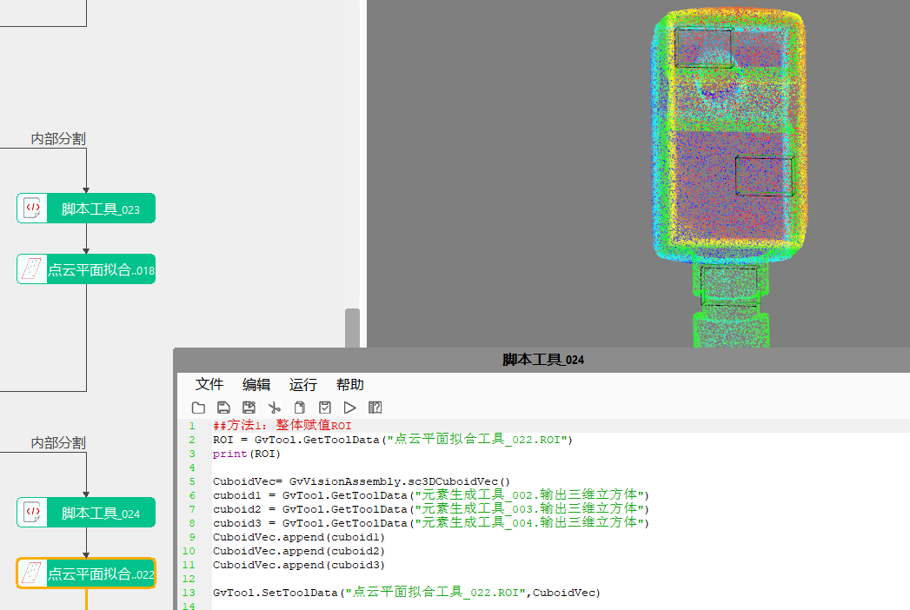

在3D高度测量项目中，经常会涉及在产品某一区域内进行平面拟合或平面度测量，该工具包括2种拟合算法：带局外点平面拟合和切比雪夫平面拟合。
带局外点平面拟合工具主要是剔除图像中的局外点，根据内点数据计算得到三维平面的解析表达式，以协助后续高度测量等操作。切比雪夫平面拟合依据新标准GB/T 11337-2004，平面度评价基准需满足最小包容条件。本工具实现在新标准意义下平面度计算。
3D测量-手机中框零件电池安装面平面度测量
3D测量-手机中板平面度测量

3D测量-手机主板屏蔽罩高度测量
Step1: 添加点云平面拟合工具，并双击打开工具参数链，链接点云文件，如图3-1所示；
Step2: 右击工具点击“属性”打开工具高级界面，如图3-2所示；
| 参数名称 | 参数描述 |
|---|---|
| 输入点云数据 | 输入待拟合的点云图像 |
| 输入点集 | 输入待拟合的点集 |
| 参数名称 | 参数描述 |
|---|---|
| 拟合类型 | 包括两种：带局外点平面拟合、切比雪夫平面拟合 |
| 是否启用点集 | 选择“是”，则根据输入的点集进行平面拟合；选择“否”，则根据输入的点云进行平面拟合 |
| 是否启用ROI | 选择“是”，则使用长方体框选ROI进行拟合；选择“否”，则对全点云进行平面拟合 |
| ROI个数 | 启用ROI的情况下，用于设置ROI的个数，范围：[1,50] |
| ROI索引 | 用于不同索引下切换 |
| 最大迭代次数 | 切比雪夫平面拟合专用，用于预防特殊点输入时工具内部算法严重超时，对于一般的平面，默认即可；范围为[10,10000] |
| 是否开启高精度 | 切比雪夫平面拟合专用，用于输入点云数量不大且非平面分布的情况；若开启，最大迭代次数设置100以上数值且耗时至少增加一倍 |
| 平面方向 | 带局外点平面拟合专用，分为两种：正方向和负方向 |
| 局外点判定距离 | 带局外点平面拟合专用，参与拟合的数据点到拟合平面距离的最大值，范围：(0,1000] |
| 局外点比例 | 带局外点平面拟合专用，局外点占总深度数据点的比例，范围：[0,1) |
| 结果置信度 | 带局外点平面拟合专用，衡量使用内点构造拟合平面的可信程度，置信度越大，拟合平面越可靠，范围：(0,1) |
| 启用采样 | 带局外点平面拟合专用，是否进行采样拟合，选择“是”，则显示采样半宽参数 |
| 采样距离 | 带局外点平面拟合专用，每隔多少采样一次，缩短平面拟合时间，范围：(0,50] |
| 开启并行运算 | 是否开启并行运算，选择是时，算法将开启OpenMp并行计算方式，可以提升计算速度，但可能出现耗时不稳定的情况，选择否时，算法将关闭OpenMp并行计算 |
| 线程数百分比 | 设置并行运算的线程数百分比，有效范围为 (0, 0.75]，对应表示(0%, 75%]百分比范围 |
| 输出三维矩形平面 | 选择“是”，则根据输入点集输出三维矩形平面，即自适应显示大小 |
高级界面参数与属性窗口参数一致，交互按钮如下：
| 按钮名称 | 参数描述 |
|---|---|
| 添加ROI | 在高级界面图像中，自动添加长方体ROI |
| 绘制当前ROI | 在高级界面图像中，相应位置点击并拖动鼠标即可绘制当前索引下的长方体ROI |
| 删除当前ROI | 在高级界面图像中，相应位置点击并拖动鼠标即可删除当前索引下的长方体ROI |
| 参数名称 | 参数描述 |
|---|---|
| 输出点云图像 | 显示待拟合的点云图像 |
| 平面拟合结果 | 输出拟合的三维平面 |
| 参数名称 | 参数描述 |
|---|---|
| 输出点云图像 | 显示待拟合的点云图像； |
| 平面拟合结果 | 三维平面：平面点，拟合平面经过的三维点 三维平面：法向量，拟合平面的法向量 三维平面：偏移量，拟合平面相对于零平面的偏移量 三维平面：倾斜角，拟合平面法向量与Z轴的夹角 三维平面：旋转角，拟合平面法向量在XOY平面的投影向量与X轴的夹角 |
| 平面度 | 输出平面的平面度，即最大偏差-最小偏差 |
| 最大偏差 | 最大偏差值 |
| 最小偏差 | 最小偏差值 |
| 三维矩形平面拟合结果 | 根据输入点集输出三维矩形平面，即点集投影到拟合平面后，计算输出投影点集的最小外接三维矩形平面 |
| 执行结果 | 工具执行结果 |
| 执行时间 | 工具执行时间 |
参见“\Samples\3D\点云\点云卡尺工具.gvp”。
带局外点平面拟合工具主要是基于Ransac算法框架，通过设置距离阈值、置信度和局外点比例来获取次优平面，再对次优平面通过迭代寻优的方法获得最优的拟合平面结果。
局外点判定距离 ：指设定点到拟合平面距离的最大值；
局外点 ：指深度数据点到拟合平面的距离不满足距离阈值的点；
局外点比例 ：局外点占总深度数据点的比例，其中，内点与外点的和为总深度数据点；
结果置信度 ：衡量使用内点构造拟合平面的可信程度，置信度越大，拟合平面越可靠。
最大迭代次数 ：工具内部进行迭代选优的最大计算次数（用于预防特殊点输入时工具内部算法严重超时）默认为50，对于一般的平面测量点云，使用默认参数即可。设置迭代次数≥1；
高精度计算模式 ：开启后工具将搜索全局最优解 （用于输入点云数量不大且非平面分布的情况）默认不开启，对于分布呈现平面状态的点云，使用默认参数即可；若开启高精度计算模式，建议将最大迭代次数设置为100以上数值，开启后耗时至少增加一倍。
对脚本设置平面拟合ROI说明
1、脚本赋值ROI：ROI指平面拟合ROI的集合；

2、脚本赋值长方体ROI：长方体ROI指当前索引下的ROI；